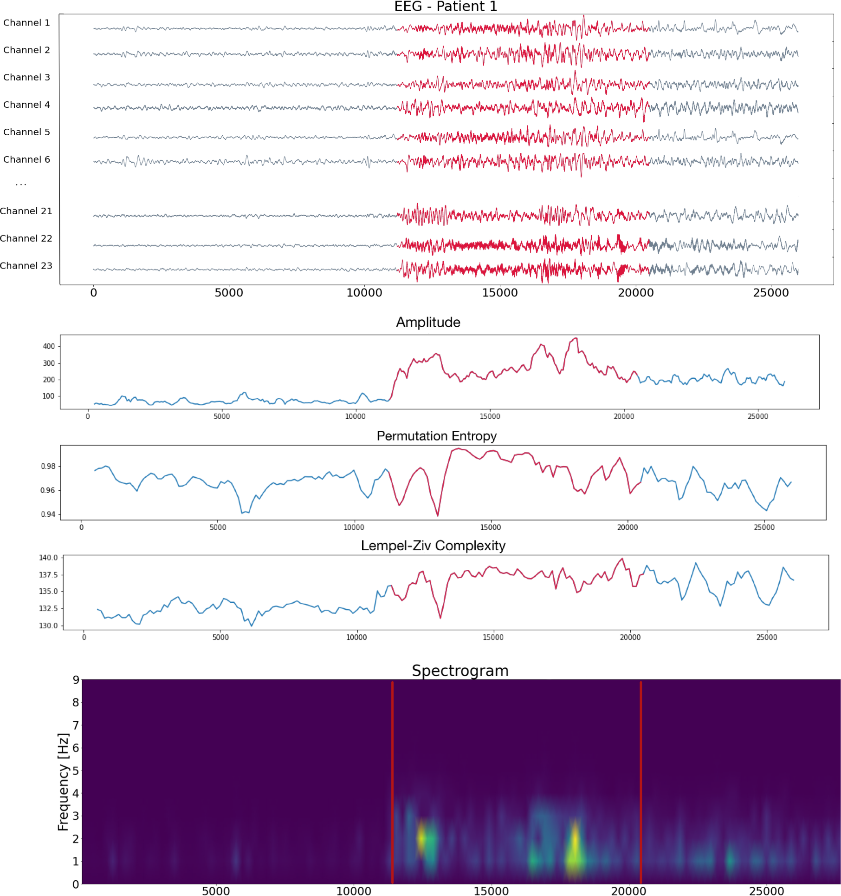
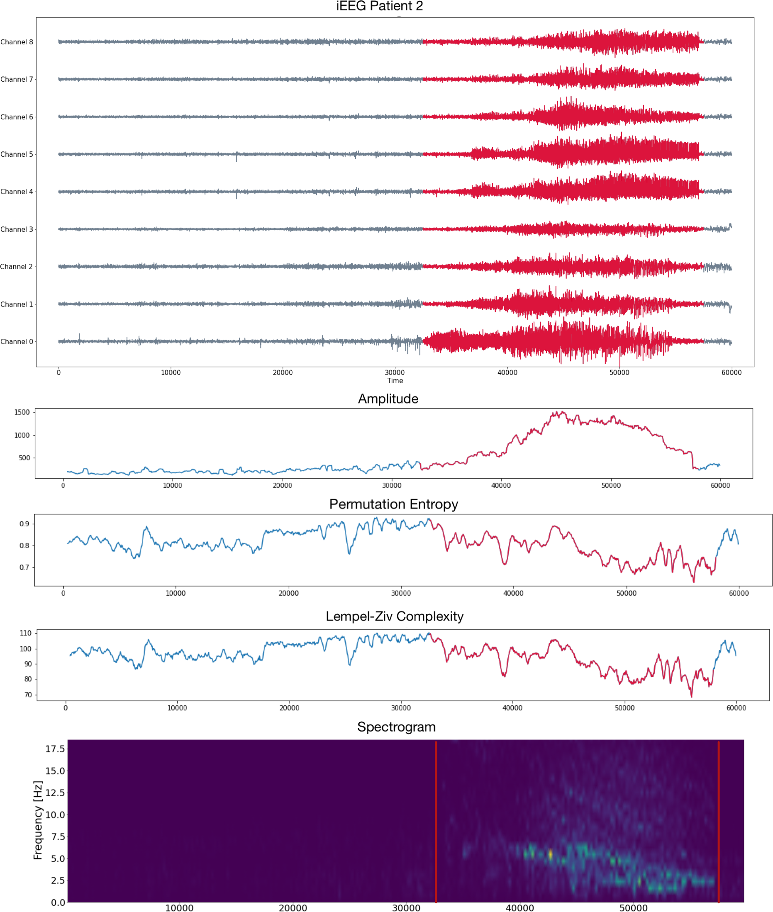
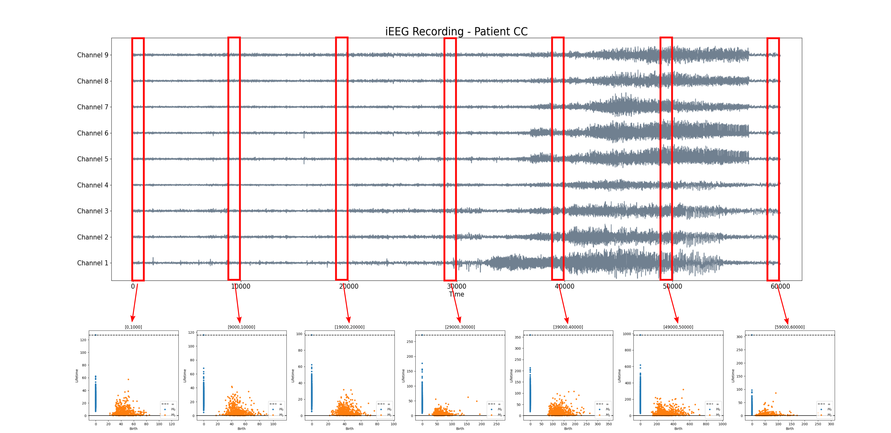
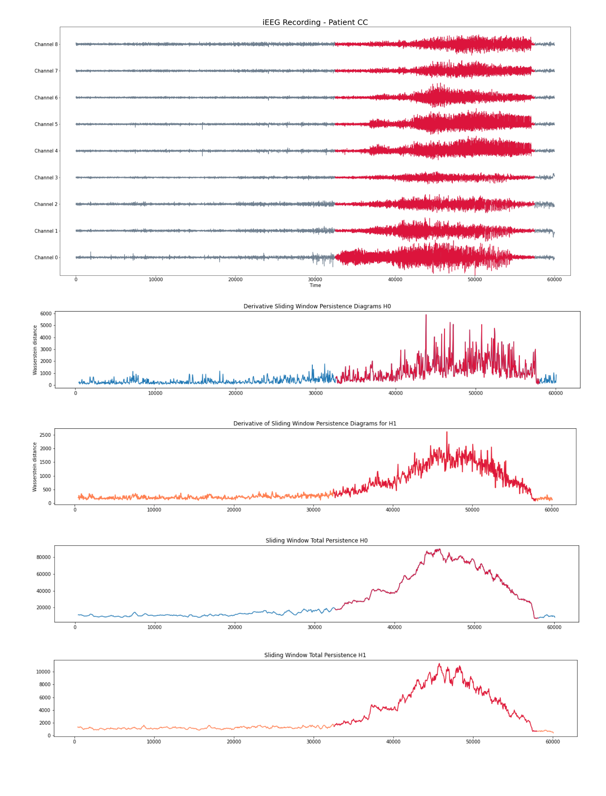
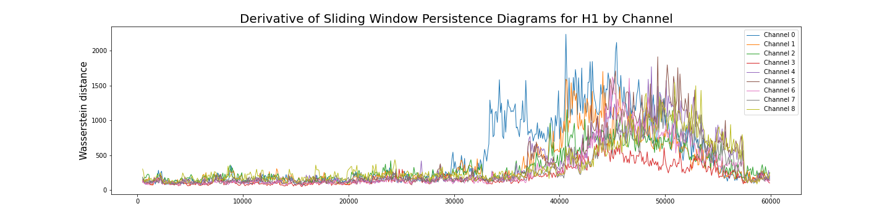
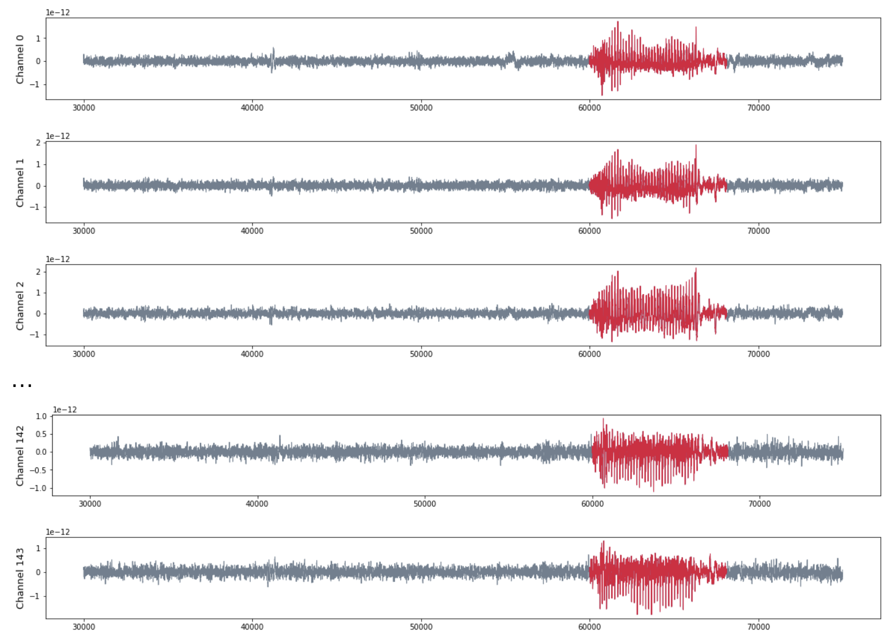

Topological biomarkers for real-time detection of epileptic seizures
XIMENA FERNANDEZ
Durham University
joint work with D. Mateos (arXiv:2211.02523)
follow-up work of
Intrinsic persistent homology via density-based metric learning, Fernandez et.al. JMLR (2023)
TDA Centre Meeting - Oxford University
Epilepsy
Epilepsy
Brain activity:
- interictal state
normal (stochastic/quasi-deterministic) activity
Epilepsy
Brain activity:
- interictal state
normal (stochastic/quasi-deterministic) activity - ictal state
abnormal synchronous activity
The problem
- Data: Raw multichannel EEG/MEG/iEEG recording during ictal and interictal states.

Source: Open database CHB-MIT, Massachusetts Institute of Technology, USA.
The problem
- Data: Raw multichannel EEG/MEG/iEEG recording during ictal and interictal states.
- Goal: Detect the epileptic seizure.
Source: Open database CHB-MIT, Massachusetts Institute of Technology, USA.
The problem
- Data: Raw multichannel EEG/MEG/iEEG recording during ictal and interictal states.
- Goal: Detect the epileptic seizure.

Source: Private recording, Toronto Western Hospital, Canada.
The problem
- Data: Raw multichannel EEG/MEG/iEEG recording during ictal and interictal states.
- Goal: Detect the epileptic seizure.

Source: Private recording, Toronto Western Hospital, Canada.
Main challenges in seizure detection
- Automated detection.
$~~~~$Currently, diagnosis relies on visual inspection of physiological recordings by the doctor, added to clinical symptoms.
Main challenges in seizure detection
- Automated detection.
$~~~~$Currently, diagnosis relies on visual inspection of physiological recordings by the doctor, added to clinical symptoms. - Universality.
$~~~~$The data may correspond to different methods of recording (MEG, EEG, iEEG), numbers of sensors, types of epilepsy and particular clinical conditions of the patients.
Main challenges in seizure detection
- Automated detection.
$~~~~$Currently, diagnosis relies on visual inspection of physiological recordings by the doctor, added to clinical symptoms. - Universality.
$~~~~$The data may correspond to different methods of recording (MEG, EEG, iEEG), numbers of sensors, types of epilepsy and particular clinical conditions of the patients. - Robustness.
$~~~~$The dataset present noise and it is sensitive to other neural conditions.
Main challenges in seizure detection
- Automated detection.
$~~~~$Currently, diagnosis relies on visual inspection of physiological recordings by the doctor, added to clinical symptoms. - Universality.
$~~~~$The data may correspond to different methods of recording (MEG, EEG, iEEG), numbers of sensors, types of epilepsy and particular clinical conditions of the patients. - Robustness.
$~~~~$The dataset present noise and it is sensitive to other neural conditions. - Real-time analysis.
$~~~~$Methods of classification of ictal/interictal states rely on preprocessing of the data, training the algorithms and computational resources.
Signal analysis
- Amplitude. Differences between the variable's extreme values.
- Short-Time Fourier Transform (STFT), an estimate of the short-term time-localized frequency content.
- Lempel-Ziv complexity (LZ), measures diversity of the patterns present in a particular signal.
- Permutation entropy, a robust non-linear statistical measure to quantify the complexity of a dynamical system in terms of a time series.
Signal analysis
Signal analysis
Brain Dynamics and Epilepsy
Brain Dynamics and Epilepsy
- Let $\varphi_1, \varphi_2, \dots, \varphi_n:[0,T]\to \mathbb{R}$ be a collection of real-valued time series, such as multichannel EEG/iEEG/MEG recordings.
Brain Dynamics and Epilepsy
- Let $\varphi_1, \varphi_2, \dots, \varphi_n:[0,T]\to \mathbb{R}$ be a collection of real-valued time series, such as multichannel EEG/iEEG/MEG recordings.
- We assume there exist an underlying dynamical system $(X, \phi)$ such that the time series $\{\varphi_i\}_{1\leq i \leq n}$ are the result of observation functions $\{F_i:X\to \mathbb R\}_{1\leq i \leq n}$
(i.e. $\varphi_i(t) = F_i(\phi(t,x))$ for some initial state $x\in X$).
Brain Dynamics and Epilepsy
- Let $\varphi_1, \varphi_2, \dots, \varphi_n:[0,T]\to \mathbb{R}$ be a collection of real-valued time series, such as multichannel EEG/iEEG/MEG recordings.
- We assume there exist an underlying dynamical system $(X, \phi)$ such that the time series $\{\varphi_i\}_{1\leq i \leq n}$ are the result of observation functions $\{F_i:X\to \mathbb R\}_{1\leq i \leq n}$
(i.e. $\varphi_i(t) = F_i(\phi(t,x))$ for some initial state $x\in X$). - We analyze the underlying (unknown) dynamics by studying their attractors (that is, the asymptotic states of the system).
Brain Dynamics and Epilepsy
- Let $\varphi_1, \varphi_2, \dots, \varphi_n:[0,T]\to \mathbb{R}$ be a collection of real-valued time series, such as multichannel EEG/iEEG/MEG recordings.
- We assume there exist an underlying dynamical system $(X, \phi)$ such that the time series $\{\varphi_i\}_{1\leq i \leq n}$ are the result of observation functions $\{F_i:X\to \mathbb R\}_{1\leq i \leq n}$
(i.e. $\varphi_i(t) = F_i(\phi(t,x))$ for some initial state $x\in X$). - We analyze the underlying (unknown) dynamics by studying their attractors (that is, the asymptotic states of the system).
Brain Dynamics and Epilepsy
- Let $\varphi_1, \varphi_2, \dots, \varphi_n:[0,T]\to \mathbb{R}$ be a collection of real-valued time series, such as multichannel EEG/iEEG/MEG recordings.
- We assume there exist an underlying dynamical system $(X, \phi)$ such that the time series $\{\varphi_i\}_{1\leq i \leq n}$ are the result of observation functions $\{F_i:X\to \mathbb R\}_{1\leq i \leq n}$
(i.e. $\varphi_i(t) = F_i(\phi(t,x))$ for some initial state $x\in X$). - We analyze the underlying (unknown) dynamics by studying their attractors (that is, the asymptotic states of the system).
Brain Dynamics and Epilepsy
- Let $\varphi_1, \varphi_2, \dots, \varphi_n:[0,T]\to \mathbb{R}$ be a collection of real-valued time series, such as multichannel EEG/iEEG/MEG recordings.
- We assume there exist an underlying dynamical system $(X, \phi)$ such that the time series $\{\varphi_i\}_{1\leq i \leq n}$ are the result of observation functions $\{F_i:X\to \mathbb R\}_{1\leq i \leq n}$
(i.e. $\varphi_i(t) = F_i(\phi(t,x))$ for some initial state $x\in X$). - We analyze the underlying (unknown) dynamics by studying their attractors (that is, the asymptotic states of the system).
We will detect the change of dynamics via the topological analysis of embeddings of the signals.
Topological biomarkers for
Epilepsy detection
Sliding Window Persistence
- Let $\varphi = (\varphi_1, \varphi_2, \dots \varphi_n):[0,T]\to \mathbb{R}^n$ be a multichannel recording.$~~~~~~~~~~~~~~~~~~$$~~~~~~~~~~~~~~~~$

Sliding Window Persistence
- Let $\varphi = (\varphi_1, \varphi_2, \dots \varphi_n):[0,T]\to \mathbb{R}^n$ be a multichannel recording.$~~~~~~~~~~~~~~~~~~$$~~~~~~~~~~~~~~~~$
- Given a window size $\omega$, we compute for every $t\in [\omega,T]$ the embedding $\mathrm{SWE}_{\varphi, \omega}(t) :=\varphi([t-\omega, t])$ in $\mathbb{R}^n$.

Sliding Window Persistence
- Let $\varphi = (\varphi_1, \varphi_2, \dots \varphi_n):[0,T]\to \mathbb{R}^n$ be a multichannel
recording.$~~~~~~~~~~~~~~~~~~$$~~~~~~~~~~~~~~~~$
- Given a window size $\omega$, we compute for every $t\in [\omega,T]$ the embedding $\mathrm{SWE}_{\varphi, \omega}(t) :=\varphi([t-\omega, t])$ in $\mathbb{R}^n$.
- We compute the persistent homology $\mathrm{dgm}(\mathrm{SWE}_{\varphi, \omega}(t))$ of the time evolving sliding window embedding.

Sliding Window Persistence
- Let $\varphi = (\varphi_1, \varphi_2, \dots \varphi_n):[0,T]\to \mathbb{R}^n$ be a multichannel recording.$~~~~~~~~~~~~~~~~~~$$~~~~~~~~~~~~~~~~$
- Given a window size $\omega$, we compute for every $t\in [\omega,T]$ the embedding $\mathrm{SWE}_{\varphi, \omega}(t) :=\varphi([t-\omega, t])$ in $\mathbb{R}^n$.
- We compute the persistent homology $\mathrm{dgm}(\mathrm{SWE}_{\varphi, \omega}(t))$ of the time evolving sliding window embedding.
Topological biomarkers
Given $\varphi = (\varphi_1, \varphi_2, \dots \varphi_n):[0,T]\to \mathbb{R}^n$ a multichannel recording and $\omega$ a window size.
\[\mathbb{R} ~\longrightarrow ~\mathrm{Top} ~\longrightarrow ~\mathrm{Dgm}~~~~~~~~~~~~~~~~~~~~~~~~~~~~\] \[t\mapsto \mathrm{SWE}_{\varphi, \omega} (t)\mapsto \mathrm{dgm}\big(\mathrm{SWE}_{\varphi, \omega}(t) \big)=:\mathcal{D}_t\]
We compute the following topological summaries:
- Approximate Derivative: Given a time step $\varepsilon>0$\[\dfrac{d_{W}(\mathcal{D}_t, \mathcal{D}_{t-\varepsilon})}{\varepsilon}\]
- Total persistence: \[\sum_{(x,y) \in \mathcal{D_t}} \mathrm{pers}(x,y).\]
Experimental results
Patient 1 (EEG)
- Scalp EEG with 23 sensors at frequency 256 Hz.
- Source: CHB-MIT database from Children’s Hospital Boston, USA.

Patient 1 (EEG)

Patient 2 (iEEG)
- Intracraneal EEG with 9 sensors at frequency 200 Hz.
- Source: Clinical presurgical analysis, Toronto Western Hospital, Canada.

Patient 2 (iEEG)
Patient 3 (MEG)
- MEG with 144 sensors at frequency 625 Hz
- Source: Toronto Western Hospital, Canada.

Patient 3 (MEG)
Computational implementation
Computational implementation
- Window size $\omega$ equivalent to 1 or 2 seconds.
- Time step $\varepsilon$ equivalent to 0.5 seconds.
- Execution time (MacBook Pro 8-core CPU 32-core GPU 16 GB unified memory):
- Persistence diagrams (Ripser) $\sim 0.25$ seconds
- 1-Wasserstein distance (Ripser) $\sim 0.1$ seconds
- Total persistence $\sim 0.5\times 10^{-5}$ seconds.
- The computations can be performed in real time.
Global vs local seizures
Global vs local seizures
- Focal seizures, involve part of the cerebral hemisphere.
- Generalized seizures, involve the entire brain, usually presenting loss of consciousness.
Goal: Topologically understand how local vs global dynamics changes over the time.
Global vs local seizures
The time delay embedding of $\varphi_i$ with parameters $d$ and $\tau$ is the vector-valued function \begin{align} X_{d,\tau}\varphi_i\colon &~[0, T-d\tau]\rightarrow ~~\mathbb{R}^{d+1}\\ &~~~~~~~~~~~~~~~t ~~\mapsto ~(\varphi_i(t), \varphi_i(t + \tau), \varphi_i(t + 2\tau), \dots, \varphi_i(t + d\tau))\\ \end{align}
Given a single time series data $\varphi_i(t)$ observed from a (potentially unknown) dynamical system $(X, \phi)$, Takens’ theorem implies that (generically) the time delay embedding $X_{d,\tau}\varphi_i([0,T])$ provides a topological copy of $\{\phi(t, x_0) ∶ t \in [0,T]\} \subseteq X$ for a start point $x_0\in X$.
Analysis by channel
Given $\varphi_i:[0,T]\to \mathbb{R}$ a single channel of the recording, we construct its time delay embedding \[X_{d,\tau}\varphi_i\colon [0, T-d\tau]\rightarrow \mathbb{R}^{d+1}\] Given $\omega$ a window size, the sliding window delay embedding $\mathrm{SWDE}_{\varphi_i, \omega}$ of $\varphi_i$ is the sliding window embedding of $X_{d,\tau}\varphi_i$.
\[[0, T-d\tau] ~\longrightarrow ~~\mathrm{Top} ~~\longrightarrow ~~\mathrm{Dgm}~~~~~~~~~~~~~~~~~~~~~~~~~~~~~~~\] \[~~~~~~~~~~~~~~~~~t\mapsto \mathrm{SWDE}_{\varphi_i, \omega} (t)\mapsto \mathrm{dgm}\big(\mathrm{SWDE}_{\varphi_i, \omega}(t) \big)=:\mathcal{D}_t\]
Analysis by channel

Analysis by channel

Analysis by channel

Analysis by channel

Summary
- Automated detection.
$~~~~$It is possible to topologically and computationally detect epileptic seizures by means of time-evolving persistence diagrams.
Summary
- Automated detection.
$~~~~$It is possible to topologically and computationally detect epileptic seizures by means of time-evolving persistence diagrams. - Universality.
$~~~~$The topological biomarkers are sensitive to epileptic activity under a variety of settings: different methods of recording (MEG, EEG, iEEG), number of sensors and types of epilepsy.
Summary
- Automated detection.
$~~~~$It is possible to topologically and computationally detect epileptic seizures by means of time-evolving persistence diagrams. - Universality.
$~~~~$The topological biomarkers are sensitive to epileptic activity under a variety of settings: different methods of recording (MEG, EEG, iEEG), number of sensors and types of epilepsy. - Robustness.
$~~~~$The topological summaries are (more) robust to noisy recordings (stability).
Summary
- Automated detection.
$~~~~$It is possible to topologically and computationally detect epileptic seizures by means of time-evolving persistence diagrams. - Universality.
$~~~~$The topological biomarkers are sensitive to epileptic activity under a variety of settings: different methods of recording (MEG, EEG, iEEG), number of sensors and types of epilepsy. - Robustness.
$~~~~$The topological summaries are (more) robust to noisy recordings (stability). - Real-time analysis.
$~~~~$ This is a unsupervised method (no preprocessing or training step), which updates every $\varepsilon$ seconds (for reasonable choices of $\omega$ and $\varepsilon$) and can be computed in real time.
Next step. Explain the connection between the dynamic features of epileptic seizures and the topological biomarkers.